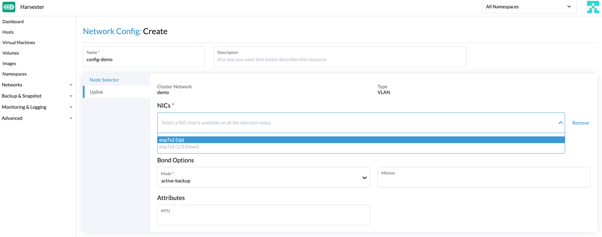

Rede de Cluster
Conceitos
Rede de Cluster
O diagrama a seguir descreve uma arquitetura de rede típica que separa o tráfego do data center (DC) do tráfego fora de banda (OOB).

Abstraímos a soma de dispositivos, links e configurações em um caminho de encaminhamento isolado de tráfego em SUSE Virtualization como uma rede de cluster.
No caso acima, haverá duas redes de cluster correspondendo a dois caminhos de encaminhamento isolados de tráfego.
Configuração de rede
As especificações, incluindo dispositivos de rede dos hosts SUSE Virtualization, podem ser diferentes. Para ser compatível com um cluster tão heterogêneo, projetamos a configuração da rede.
A configuração da rede só funciona sob uma determinada rede de cluster. Cada configuração de rede corresponde a um conjunto de hosts com especificações de rede uniformes. Portanto, múltiplas configurações de rede são necessárias para uma rede de cluster em hosts não uniformes.
Rede de VM
Uma rede de VM é uma interface em uma máquina virtual que se conecta à rede do host. Assim como em uma configuração de rede, toda rede, exceto a rede de gerenciamento incorporada, deve estar sob uma rede de cluster.
SUSE Virtualization suporta a adição de múltiplas redes a uma VM. Se a rede de cluster de uma rede não estiver habilitada em alguns hosts, a VM que possui essa rede não será agendada para esses hosts.
Por favor, consulte parte da rede para mais detalhes sobre redes.
Relação entre Rede de Cluster, Configuração de Rede, Rede de VM
O diagrama a seguir mostra a relação entre uma rede de cluster, uma configuração de rede e uma rede de VM.

Todos Network Configs e VM Networks estão agrupados sob uma rede de cluster.
-
Um rótulo pode ser atribuído a cada host para categorizar os hosts com base em suas especificações de rede.
-
Uma configuração de rede pode ser adicionada para cada grupo de hosts usando um seletor de nó.
Por exemplo, no diagrama acima, os hosts em ClusterNetwork-A estão divididos em três grupos da seguinte forma:
-
O primeiro grupo inclui host0, que corresponde a
network-config-A. -
O segundo grupo inclui host1 e host2, que correspondem a
network-config-B. -
O terceiro grupo inclui os hosts restantes (host3, host4 e host5), que não têm nenhuma configuração de rede relacionada e, portanto, não pertencem a
ClusterNetwork-A.
A rede de cluster é eficaz apenas em hosts que estão cobertos pela configuração de rede. Uma VM usando um VM network sob uma rede de cluster específica só pode ser agendada em um host onde a rede de cluster está ativa.
No diagrama acima, podemos ver que:
-
ClusterNetwork-Aestá ativo em host0, host1 e host2.VM0usaVM-network-A, portanto, pode ser agendado em qualquer um desses hosts. -
VM1usa tantoVM-network-BquantoVM-network-C, portanto, só pode ser agendado em host2 onde tantoClusterNetwork-AquantoClusterNetwork-Bestão ativos. -
VM0,VM1eVM2não podem ser executados em host3 onde as duas redes de cluster estão inativas.
No geral, este diagrama fornece uma visualização clara da relação entre redes de cluster, configurações de rede e redes de VM, bem como de como elas impactam o agendamento de VMs em hosts.
Detalhes da rede de cluster
As redes de cluster são caminhos de encaminhamento isolados para transmissão de tráfego de rede dentro de um SUSE Virtualization cluster.
Uma rede de cluster chamada mgmt é criada automaticamente quando um SUSE Virtualization cluster é implantado. Você também pode criar redes de cluster personalizadas que podem ser dedicadas ao tráfego de máquinas virtuais.
Rede de cluster incorporada
Quando um SUSE Virtualization cluster é implantado, uma rede de cluster chamada mgmt é criada automaticamente para comunicações intra-cluster. mgmt consiste na mesma ponte, vínculo e NICs que a rede de infraestrutura externa à qual cada SUSE Virtualization host se conecta com NICs de gerenciamento. Devido a esse design, mgmt também permite que máquinas virtuais sejam acessadas a partir da rede de infraestrutura externa para fins de gerenciamento de cluster.
mgmt não requer uma configuração de rede e está sempre habilitado em todos os hosts. Você não pode desativar e excluir mgmt.
|
No SUSE Virtualization v1.5.x e versões anteriores, toda a faixa de IDs de VLAN (2 a 4094) era atribuída às interfaces Para mais informações, consulte issue #7650. |
A partir da v1.6.0, apenas o ID de VLAN primário fornecido durante a instalação é adicionado automaticamente à ponte mgmt-br e à interface mgmt-bo. Você pode adicionar interfaces de VLAN secundárias após a conclusão da instalação.
Durante a instalação do primeiro nó do cluster, você pode configurar o valor MTU para mgmt usando a configuração install.management_interface. O valor padrão do campo mtu é 1500, que é o que mgmt normalmente utiliza. No entanto, se você especificar um valor MTU diferente de 0 ou 1500, você deve adicionar uma anotação correspondente após o cluster ser implantado.
|
Adicionar interfaces de VLAN secundárias
-
Verifique as configurações atuais de VLAN para os perfis de conexão
bond-mgmtebridge-mgmt.Exemplo (onde o ID de VLAN primário é 2017):
$ nmcli -f bridge-port.vlans con show bond-mgmt bridge-port.vlans: 1 pvid untagged, 2017 $ nmcli -f bridge.vlans con show bridge-mgmt bridge.vlans: 2017 -
Atualize os perfis de conexão
bond-mgmtebridge-mgmtpara adicionar o ID da VLAN secundária.Exemplo (onde o ID da VLAN primária é 2017 e o ID da VLAN secundária é 2018):
$ nmcli con modify bond-mgmt bridge-port.vlans '1 pvid untagged, 2017, 2018' $ nmcli con modify bridge-mgmt bridge.vlans 2017,2018 -
Reinicie cada nó para aplicar a alteração.
Anote um valor MTU não padrão para mgmt após a instalação.
Se você especificou um valor diferente de 0 ou 1500 no campo mtu da configuração install.management_interface, deve anotar esse valor no objeto mgmt clusternetwork. Sem a anotação, todas as redes de VM criadas usam o valor MTU padrão 1500 em vez de herdar automaticamente o valor que você especificou.
Exemplo
$ kubectl annotate clusternetwork mgmt network.harvesterhci.io/uplink-mtu="9000"
|
Você deve garantir o seguinte:
|
Altere o valor MTU de mgmt após a instalação.
-
Pare todas as máquinas virtuais que estão conectadas à rede
mgmt. -
(Opcional) Desative a rede de armazenamento se ela usar
mgmte estiver habilitada. -
Altere o valor MTU para os perfis de conexão
bond-mgmt,bridge-mgmtevlan-mgmt(se você estiver usando uma VLAN).Exemplo:
$ nmcli con modify bond-mgmt 802-3-ethernet.mtu 9000 $ nmcli con modify bridge-mgmt 802-3-ethernet.mtu 9000 $ nmcli con modify vlan-mgmt 802-3-ethernet.mtu 9000 $ nmcli device reapply mgmt-bo $ nmcli device reapply mgmt-br -
Verifique os valores MTU usando o comando
ip link. -
Anote o objeto
mgmtclusternetworkcom o novo valor MTU.Exemplo:
$ kubectl annotate clusternetwork mgmt network.harvesterhci.io/uplink-mtu="9000"Todas as redes de VM que estão conectadas a
mgmtherdam automaticamente o novo valor MTU. -
(Opcional) Habilite a rede de armazenamento que você desativou antes de alterar o valor MTU.
-
Inicie todas as máquinas virtuais que estão conectadas a
mgmt. -
Verifique se as cargas de trabalho das máquinas virtuais estão funcionando normalmente.
Para obter mais informações, consulte [Change the MTU of a network configuration with an attached storage network].
Rede de cluster personalizada
Se mais de uma interface de rede estiver conectada a cada host, você pode criar redes de cluster personalizadas para melhor isolamento de tráfego. Cada rede de cluster deve ter pelo menos uma configuração de rede com um escopo definido e modo de vínculo.
|
O nó de testemunha geralmente não está envolvido na rede de cluster personalizada. |
Configuração
Criar uma nova rede de cluster
|
Para simplificar a manutenção do cluster, crie uma configuração de rede para cada nó ou grupo de nós. Sem configurações de rede dedicadas, certas tarefas de manutenção (por exemplo, substituir NICs antigos por NICs em slots diferentes) exigirão que você pare e/ou migre as máquinas virtuais afetadas antes de atualizar a configuração de rede. |
-
Verifique se os requisitos de hardware são atendidos.
-
Vá para Redes → ClusterNetworks/Configs e clique em Criar.
-
Especifique um nome para a rede de cluster.

-
Na tela ClusterNetworks/Configs, clique no botão Criar Configuração de Rede da rede de cluster que você criou.

-
Na tela Configuração de Rede:Criar, especifique um nome para a configuração.
-
Na aba Selecionador de Nós, selecione o método para definir o escopo desta configuração de rede específica.

-
O método Selecionar todos os nós funciona apenas quando todos os nós usam as mesmas NICs dedicadas para esta rede de cluster personalizada específica. Em outras situações (por exemplo, quando o cluster tem um nó de testemunha), você deve selecionar um dos métodos restantes.
-
Se você quiser que a configuração se aplique a nós que não estão cobertos pelo método selecionado, deve criar outra configuração de rede.
-
-
Na aba Uplink, configure as seguintes configurações:
-
NICs: A lista contém NICs que são comuns a todos os nós selecionados. NICs que não podem ser selecionados estão indisponíveis em um ou mais nós e devem ser configurados. Uma vez que a solução de problemas esteja concluída, atualize a tela e verifique se os NICs podem ser selecionados.
-
Opções de vínculo: O modo de vínculo padrão é
active-backup. -
Atributos: Você deve usar o mesmo MTU em todas as configurações de rede de uma rede de cluster personalizada. Se você não especificar um MTU, o valor padrão
1500será utilizado. O SUSE Virtualization webhook rejeita uma nova configuração de rede se seu MTU não corresponder ao MTU das configurações de rede existentes.
Os switches físicos conectados a interfaces de vínculo devem ser configurados como portas trunk. Essas portas devem aceitar tráfego marcado e enviar tráfego marcado com o ID da VLAN usado pela rede da VM.
-
-
Clique em Salvar.
Alterar uma configuração de rede
Alterações nas configurações de rede existentes podem afetar SUSE Virtualization máquinas virtuais e cargas de trabalho, além de dispositivos externos como switches e roteadores. Para mais informações, consulte Topologia de Rede.
|
Você deve parar todas as máquinas virtuais afetadas antes de alterar uma configuração de rede. |
As seções a seguir descrevem os passos que você deve realizar para alterar o MTU de uma configuração de rede. A rede de cluster de amostra usada nessas seções tem cn-data que foi construída com um valor de MTU de 1500 e deve ser alterada para 9000.

Modificações gerais
-
Localize a rede do cluster de destino e a configuração da rede.
No exemplo a seguir, a rede do cluster é
cn-datae a configuração da rede énc-1.
-
Selecione ⋮ → Editar Config, e então altere os campos relevantes.
-
Aba Selecionador de Nós:

-
Aba Uplink:

Você deve usar os mesmos valores para os campos Opções de vínculo e Atributos em todas as configurações de rede de uma rede de cluster personalizada.
-
-
Clique em Salvar.
Altere o MTU de uma configuração de rede sem rede de armazenamento anexada
Neste cenário, a configuração da rede de armazenamento não está nem habilitada nem anexada à rede do cluster de destino.
|
Se você precisar alterar o MTU, execute os seguintes passos:
-
Pare todas as máquinas virtuais que estão anexadas à rede do cluster de destino.
Você pode verificar isso usando a rede da máquina virtual e quaisquer redes secundárias que você possa ter usado. Não altere o MTU enquanto qualquer uma das máquinas virtuais conectadas ainda estiver em execução.
-
Verifique as configurações de rede da rede do cluster de destino.
Se várias configurações de rede existirem, registre o selecionador de nós para cada uma e remova as configurações até que apenas uma permaneça.
-
Altere o MTU da configuração de rede restante.
Você também deve alterar o MTU no switch ou roteador externo correspondente.
-
Verifique se o MTU foi alterado usando o comando Linux
ip link.Se a configuração de rede selecionar vários nós SUSE Virtualization, execute o comando em cada nó.
A saída deve mostrar o novo MTU do dispositivo
*-brrelacionado e o estadoUP. No exemplo a seguir, o dispositivo écn-data-bre o novo MTU é9000.Harvester node $ ip link show dev cn-data-br |new MTU| |state UP| 3: cn-data-br: <BROADCAST,MULTICAST,UP,LOWER_UP> mtu 9000 qdisc noqueue state UP mode DEFAULT group default qlen 1000 link/ether 52:54:00:6e:5c:2a brd ff:ff:ff:ff:ff:ffQuando o estado é
UNKNOWN, é provável que os valores de MTU em SUSE Virtualization e no switch ou roteador externo não coincidam. -
Teste o novo MTU em nós SUSE Virtualization usando comandos como
ping.Você deve enviar as mensagens para um nó SUSE Virtualization com o novo MTU ou um nó com um IP externo.
No exemplo a seguir, a rede é
cn-data, o CIDR é192.168.100.0/24e o gateway é192.168.100.1.-
Defina o IP
192.168.100.100no dispositivo de ponte.$ ip addr add dev cn-data-br 192.168.100.100/24 -
Adicione uma rota para o IP de destino (por exemplo,
8.8.8.8) via o gateway.$ ip route add 8.8.8.8 via 192.168.100.1 dev cn-data-br -
Pingue o IP de destino a partir do novo IP
192.168.100.100.$ ping 8.8.8.8 -I 192.168.100.100 PING 8.8.8.8 (8.8.8.8) from 192.168.100.100 : 56(84) bytes of data. 64 bytes from 8.8.8.8: icmp_seq=1 ttl=59 time=8.52 ms 64 bytes from 8.8.8.8: icmp_seq=2 ttl=59 time=8.90 ms ... -
Pingue o IP de destino com um tamanho de pacote diferente para validar o novo MTU.
$ ping 8.8.8.8 -s 8800 -I 192.168.100.100 PING 8.8.8.8 (8.8.8.8) from 192.168.100.100 : 8800(8828) bytes of data The param `-s` specify the ping packet size, which can test if the new MTU really works -
Remova a rota que você usou para testar.
$ ip route delete 8.8.8.8 via 192.168.100.1 dev cn-data-br -
Remova o IP que você usou para testar.
$ ip addr delete 192.168.100.100/24 dev cn-data-br
-
-
Adicione de volta as configurações de rede que você removeu.
Você deve alterar o MTU em cada configuração de rede e verificar se o novo MTU foi aplicado. O webhook SUSE Virtualization rejeita uma nova configuração de rede se seu MTU não coincidir com o MTU das configurações de rede existentes.
Todas as redes VM que estão conectadas à rede do cluster de destino herdam automaticamente o novo valor de MTU.
No exemplo a seguir, o nome da rede é vm100. Execute o comando kubectl get NetworkAttachmentDefinition.k8s.cni.cncf.io vm100 -oyaml para verificar se o valor de MTU foi atualizado:
+
apiVersion: k8s.cni.cncf.io/v1
kind: NetworkAttachmentDefinition
metadata:
annotations:
network.harvesterhci.io/route: '{"mode":"auto","serverIPAddr":"","cidr":"","gateway":""}'
creationTimestamp: '2025-04-25T10:21:01Z'
finalizers:
- wrangler.cattle.io/harvester-network-nad-controller
- wrangler.cattle.io/harvester-network-manager-nad-controller
generation: 1
labels:
network.harvesterhci.io/clusternetwork: cn-data
network.harvesterhci.io/ready: 'true'
network.harvesterhci.io/type: L2VlanNetwork
network.harvesterhci.io/vlan-id: '100'
name: vm100
namespace: default
resourceVersion: '1525839'
uid: 8dacf415-ce90-414a-a11b-48f041d46b42
spec:
config: >-
{"cniVersion":"0.3.1","name":"vm100","type":"bridge","bridge":"cn-data-br","promiscMode":true,"vlan":100,"ipam":{},"mtu":9000} // MTU has been updated-
Inicie todas as máquinas virtuais que estão conectadas à rede do cluster de destino.
As máquinas virtuais devem ter herdado o novo MTU. Você pode verificar isso no sistema operacional convidado usando os comandos
ip linkeping 8.8.8.8 -s 8800. -
Verifique se as cargas de trabalho das máquinas virtuais estão funcionando normalmente.
|
SUSE Virtualization não pode ser responsabilizado por qualquer dano ou perda de dados que possa ocorrer quando o valor de MTU for alterado. |
Altere o MTU de uma configuração de rede com uma rede de armazenamento conectada.
Neste cenário, a configuração da rede de armazenamento está habilitada e conectada à rede do cluster de destino.
A rede de armazenamento é utilizada por driver.longhorn.io, que é o driver CSI padrão de SUSE Virtualization. SUSE Storage é responsável por provisionar volumes raiz, portanto, alterar o MTU afeta todas as máquinas virtuais.
|
Se você precisar alterar o MTU, execute os seguintes passos:
-
Pare todas as máquinas virtuais.
-
Desative a configuração da rede de armazenamento.
Permita algum tempo para que a configuração seja desativada e, em seguida, verifique se a alteração foi aplicada.
-
Verifique as configurações de rede da rede do cluster de destino.
Se várias configurações de rede existirem, registre o selecionador de nós para cada uma e remova as configurações até que apenas uma permaneça.
-
Altere o MTU da configuração de rede restante.
Você também deve alterar o MTU no switch ou roteador externo par.
-
Verifique se o MTU foi alterado usando o comando
ip link.Se a configuração de rede selecionar vários SUSE Virtualization nós, execute o comando em cada nó.
A saída deve mostrar o novo MTU do dispositivo
*-brrelacionado e o estadoUP. No exemplo a seguir, o dispositivo écn-data-bre o novo MTU é9000.Harvester node $ ip link show dev cn-data-br |new MTU| |state UP| 3: cn-data-br: <BROADCAST,MULTICAST,UP,LOWER_UP> mtu 9000 qdisc noqueue state UP mode DEFAULT group default qlen 1000 link/ether 52:54:00:6e:5c:2a brd ff:ff:ff:ff:ff:ffQuando o estado é
UNKNOWN, é provável que os valores de MTU em SUSE Virtualization e no switch ou roteador externo não coincidam. -
Teste o novo MTU em nós SUSE Virtualization usando comandos como
ping.Você deve enviar as mensagens para um nó SUSE Virtualization com o novo MTU ou para um nó com um IP externo.
No exemplo a seguir, a rede é
cn-data, o CIDR é192.168.100.0/24e o gateway é192.168.100.1.-
Defina o IP
192.168.100.100no dispositivo de ponte.$ ip addr add dev cn-data-br 192.168.100.100/24 -
Adicione uma rota para o IP de destino (por exemplo,
8.8.8.8) via o gateway.$ ip route add 8.8.8.8 via 192.168.100.1 dev cn-data-br -
Pingue o IP de destino a partir do novo IP
192.168.100.100.$ ping 8.8.8.8 -I 192.168.100.100 PING 8.8.8.8 (8.8.8.8) from 192.168.100.100 : 56(84) bytes of data. 64 bytes from 8.8.8.8: icmp_seq=1 ttl=59 time=8.52 ms 64 bytes from 8.8.8.8: icmp_seq=2 ttl=59 time=8.90 ms ... -
Pingue o IP de destino com um tamanho de pacote diferente para validar o novo MTU.
$ ping 8.8.8.8 -s 8800 -I 192.168.100.100 PING 8.8.8.8 (8.8.8.8) from 192.168.100.100 : 8800(8828) bytes of data The param `-s` specify the ping packet size, which can test if the new MTU really works -
Remova a rota que você usou para testes.
$ ip route delete 8.8.8.8 via 192.168.100.1 dev cn-data-br -
Remova o IP que você usou para testes.
$ ip addr delete 192.168.100.100/24 dev cn-data-br
-
-
Adicione de volta as configurações de rede que você removeu.
Você deve alterar o MTU em cada configuração de rede e verificar se o novo MTU foi aplicado. O webhook SUSE Virtualization rejeita uma nova configuração de rede se seu MTU não coincidir com o MTU das configurações de rede existentes.
-
Habilite e configure a configuração da rede de armazenamento, garantindo que os pré-requisitos sejam atendidos.
-
Permita algum tempo para que a configuração seja habilitada e, em seguida, verifique se a alteração foi aplicada. O
storagenetworkopera com o novo valor de MTU.
Todas as redes VM que estão conectadas à rede do cluster de destino herdam automaticamente o novo valor de MTU.
+
No exemplo a seguir, o nome da rede é vm100. Execute o comando kubectl get NetworkAttachmentDefinition.k8s.cni.cncf.io vm100 -oyaml para verificar se o valor de MTU foi atualizado.
+
apiVersion: k8s.cni.cncf.io/v1 +
kind: NetworkAttachmentDefinition +
metadata: +
annotations: +
network.harvesterhci.io/route: '{"mode":"auto","serverIPAddr":"","cidr":"","gateway":""}' +
creationTimestamp: '2025-04-25T10:21:01Z' +
finalizers: +
- wrangler.cattle.io/harvester-network-nad-controller +
- wrangler.cattle.io/harvester-network-manager-nad-controller +
generation: 1 +
labels: +
network.harvesterhci.io/clusternetwork: cn-data +
network.harvesterhci.io/ready: 'true' +
network.harvesterhci.io/type: L2VlanNetwork
network.harvesterhci.io/vlan-id: '100' +
name: vm100 +
namespace: default +
resourceVersion: '1525839' +
uid: 8dacf415-ce90-414a-a11b-48f041d46b42 +
spec: +
config: >- +
{"cniVersion":"0.3.1","name":"vm100","type":"bridge","bridge":"cn-data-br","promiscMode":true,"vlan":100,"ipam":{},"mtu":9000} // O MTU foi atualizado
-
Inicie todas as máquinas virtuais que estão anexadas à rede do cluster de destino.
As máquinas virtuais devem ter herdado o novo MTU. Você pode verificar isso no sistema operacional convidado usando o comando Linux
ip linke o comandoping 8.8.8.8 -s 8800. -
Verifique se as cargas de trabalho das máquinas virtuais estão funcionando normalmente.
|
SUSE Virtualization não pode ser responsabilizado por qualquer dano ou perda de dados que possa ocorrer quando o valor do MTU for alterado. |